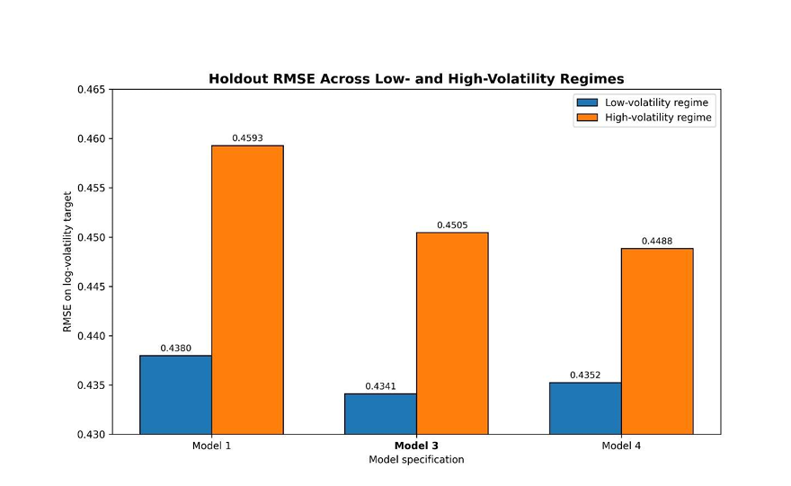
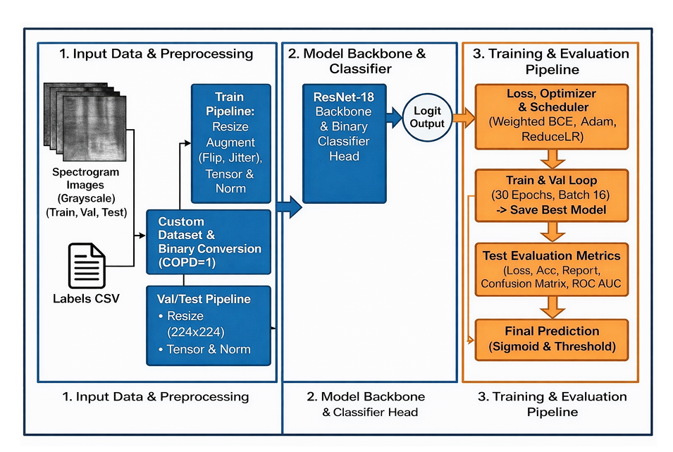
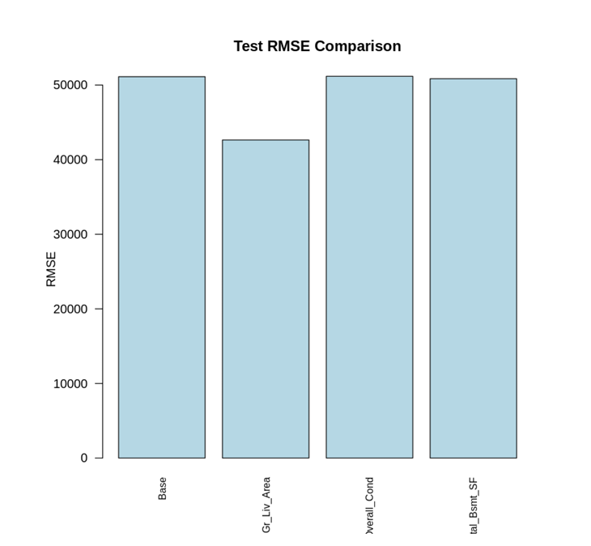
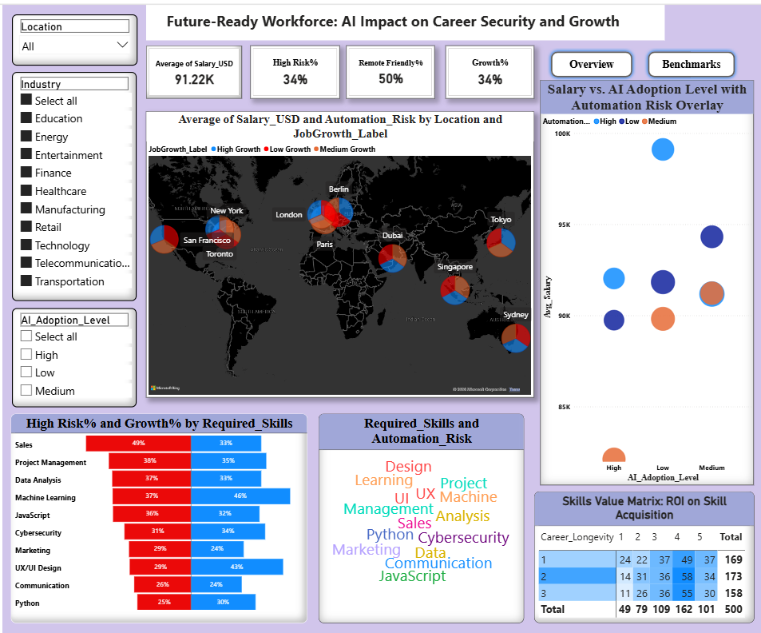

MSc Data Science & Analytics graduate (Distinction), Cardiff University. On my COPD detection project I split the data by patient rather than by recording, a leakage check most published papers on this dataset skip, because without it the model would have been tested on patients it had already seen. Below: that classifier, an NLP pipeline forecasting equity volatility from 2,058 SEC filings, the backend for a 6-person LLM platform, a statistical analysis of 2,930 house sales in R, and a Power BI workforce dashboard.
NLP signals from company risk disclosures proved 2× stronger under market stress and 14× stronger when dictionary signals were weak, confirmed by a Diebold-Mariano test (p = 0.034). Built a leakage-safe pipeline linking 2,058 SEC filings from 122 firms to 10-day volatility forecasts, achieving 12.6% RMSE improvement. Repaired 73 of 230 corrupted filings through a custom 4-stage extraction pipeline.

Achieved 0.96 ROC-AUC and 0.96 recall for COPD detection: 96 of every 100 COPD patients correctly flagged. Built on 920 lung recordings from 126 patients, split by patient so the model never trained and tested on the same person. Fixed a 7.27:1 class imbalance using weighted loss, prioritising recall because missed diagnoses carry real clinical cost.

Built the entire backend for a 6-person LLM platform in five weeks as sole backend engineer, managing 128 GitLab issues across the project. Diagnosed a concurrency bug that only appeared under multi-user load, then fixed it with explicit rollback handling and logging. Switched the LLM backend from Gemma to Mistral mid-project to meet a hosting constraint the team hit partway through.
A quadratic living-area model cut test RMSE from $51,124 to $42,639, a 16.6% improvement, while also correcting the heteroscedasticity the baseline model had. Confirmed via hypothesis testing that central air adds a 14.6% price premium (Welch t-test, p < 2.2×10⁻¹&sup6;) and neighbourhood location is highly significant (ANOVA F = 387, p < 2×10⁻¹&sup6;). Fitted Normal, Lognormal and Gamma distributions via MLE across 2,930 property sales to justify the log-transform used throughout.

Roles with the highest automation risk, including ML and data engineering, also show above-average job growth, a pattern that runs against the assumption that AI displaces the most technical jobs first. Built as a three-layer dashboard (KPI overview, geographic map, skill-level drill-down) using DAX and Power Query across multiple industries and regions.

Looking for graduate data science and analytics roles across the UK.